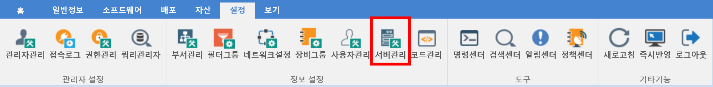
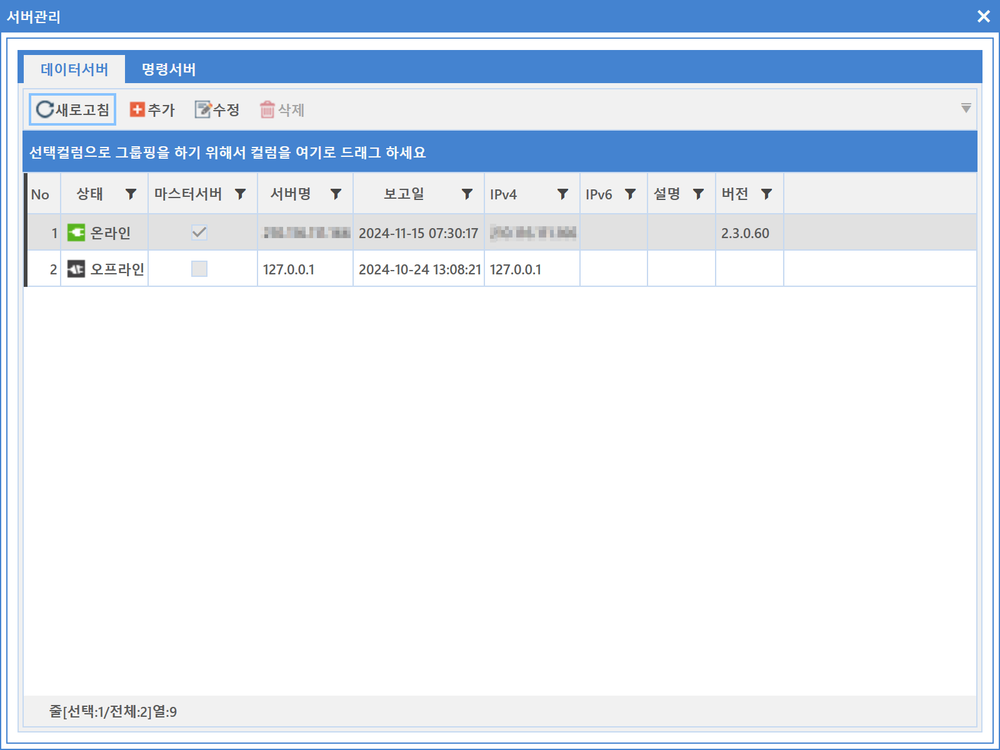

8-2-6. 서버관리
8-2-6. 서버관리
Source: https://www.sweeper.or.kr/etc/manual/8-2-6.html
8-2-6. 서버관리
8. 설정 ›› 8-2. 정보 설정 ››


서버 관리는 SWeeper의 데이터 서버, 명령서버를 관리하도록 구현되었으며, 다중 서버 운영시 각 서버들의 상태를 확인할 수 있습니다.
특히 장비를 많이 사용하는 경우 다중 서버 및 접속 에이전트를 분배하여 운영할 수 있는 환경설정을 할 수 있습니다.


© Copyright SWeeper Inc.. All Rights Reserved